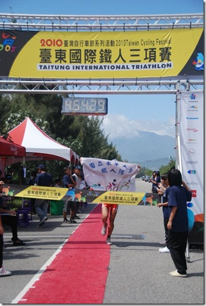

I Love This Game －－台東 123 半超鐵

- ### 感謝！
感謝東華鐵人隊的 Ben 和 Dana，讓我能毫無後顧之憂地比賽！謝謝你們。
尤其是 Dana，在我摔車受傷期間無條件地支持我。
- ### 想著驗收成果，想到睡不著！
離退伍到這場比賽，剛好滿三個月。「正好可以作為這三個月來訓練成果的驗收」，比賽前搭著 Ben 的 T4 在台九線上往南奔馳時不斷這麼想著，但愈想就愈緊張。設下目標後，如果不順利的話，我想我一定會從此一蹶不振吧！真是糟糕，一往不好的方向想，就很難回頭了。
「不要擔心，只是驗收而已喔」，我試著安撫自己，「該做的努力你都做了喔！剩下的只是把考卷翻過來，把答案填進去而已，只要小心不要算錯就好了！」但愈這麼想，就愈不能安穩，結果比賽前一天晚上，還是失眠了！一直想著可能忘了帶橡皮擦或尺的事，結果就被卡在那裡，睡意一直進不來。
- ### 有怎麼樣的身體就用怎麼樣的身體比吧！
真糟糕！每次比賽前都能睡得很安穩，這次竟然會失眠，可見我真的很在意這場比賽的結果啊！當天下水後，站在活水湖畔等著槍聲傳入耳中時，波肥問我狀況如何。我說昨夜沒睡好，喉嚨有點不舒服。他回過頭看了我一下。「沒關係啦！不管現在是什麼狀況的身體，就用這樣的身體徹底發揮實力吧！」我說。說完之後，竟然非常自豪自己能這樣想，好像不是說給波肥聽，而是想說給自己聽。
- ### 上岸前，把注意力放在片尾曲上
下水之後，一切就變得理所當然地簡單，只要一直前進就好了！這次的游泳賽道是完美的單趟來回，都是直線，而且是沿著活水湖的兩岸游，像極了在泳池中的感覺，完全不用抬頭，只要看著岸邊湖底的岩塊就可以確定方向。因為不怕游歪，所以可以很專心在動作上。這一次游泳時只想著流暢度的事，要求自己每一下划手間都盡量保持連貫，不要有死點，不要刻意加速，只要保持身體的穩定就好。

另一岸的風景就像是電影結尾向上捲動的工作人員名單似的。你知道出現那風景之後幾分鐘內就會抵達，但你必須耐著性子等待。從主角名單出現到片尾曲播完雖然才幾分鐘，但坐在電影院裡時感覺會很漫長。必須耐著性子等，不要管其他選手急著上岸的游法，就像不要管其他觀眾急著散場的步伐一樣，耐著性子等，把注意力放在片尾曲上。
- ### 上岸後，小心不要 Game Over
上岸後，就要開始變數最多的自行車項目。這 100 公里會發生什麼事誰都說不準，只要爆胎了，或是發生機械故障，就 Game Over！但這都是「命」。「命」是無法預測的。總之，只想著自己能掌握的事就好：「每十五分鐘喝一次水，每半個小時吃一次東西，在這三個小時內要把三瓶 700cc 的水喝完，先喝運動飲料。喔！對了！心跳不要超過 165。」還有，「不要管別人，看自己的心跳前進」。
去程是逆風，而且有比較多的緩上坡，所以比較辛苦。但所謂有去就有回。過了折返點後，名副其實是搭著順風車騎回轉換區的。這一路上，就只是注意喝水的事、吃東西的事，不急躁也不放鬆，留心每個路口，對每隻停在路旁的大狗小狗喊叫，「嘿！」
「鐵人三項的自行車項目就像在過橋一樣」，它只是一個連接起點與終點的過渡區，太急的話可能會掉進河裡去！有可能不只這場比賽 Game Over，可能連人生都 Game Over 掉了！每次騎車時都不自禁這樣想，所以騎完都很開心，終於可以跑步了。能開始在地面上腳踏實地地前進時，才有一種能確實掌握住比賽的真實感。
回程大順風，Ben 和 Dana 突然開車到旁邊幫我加油、拍照。看到他們心情變得好愉快！

- ### 好像要和另一位武林高手決鬥似的！
而且這場比賽更是刺激。一下車，進入轉換區，王金晴大哥緊跟在後。我知道王大哥的跑步很強，兩個月前的台中大腳ㄚ鐵人二項就是輸給王大哥，還輸了兩分多鐘。所以這次跟他一起出轉換區，既緊張又興奮。這一路上就我們兩個了，看誰先進終點吧！我非常清楚王大哥的路跑有多強，今年五月的台東 113，最後王大哥的半馬就跑出非常可怕的成績──1 小時 23 分。但我對自己的半馬也非常有信心，「到底誰會贏！可還說不定呢！」在轉換區，邊換上跑鞋時就邊想著這些事。好像再過幾秒鐘就要和另一位武林高手決鬥似的。總之，來吧！
王大哥的轉換區在我後面三十公尺處，他先起跑了，我隨後也跟著跑出去。最後兩人一前一後出轉換區時，我想「來吧！要開始 PK 了！」。
前四公里，有隊上的嚕嚕騎著車在一旁報時間，每公里幾乎都在三分五十秒左右。聽到時間後，有點不安，實在是太快了。所以第五公里就放掉一些，讓王大哥先走，再跟下去我只會被帶著跑而已，失去自己節奏的跑法對我來說不是我要的比賽過程，馬上決定放掉，改用自己的配速跑。王大哥的速度很快，一下子就拉開到三四百公尺的差距，但我也不急，我對自己的配速很有信心，甚至可以像汽車的定速裝置般以穩定的速度前進。等速跑起來非常省力，省力到甚至感到愉快。「只要他 Logu，我就追得到！」抱著這樣的心情向前跑，每一個水站都停下來喝點水，吃半截香蕉，把冰水淋在身體上。
但結果是，王大哥完全沒 Logu，到最後都以四百公尺左右的差距領先在前面。一直看得到，但就是追不到。他跑出 1 小時 28 分的成績。太令人敬佩的對手了！期待下次再交手一次。

台東 123 公里半超鐵，完成時間：4 小時 54 分鐘。
游泳約 2.3 公里(含 80 公尺跑步)：39 分鐘
自行車 100 公里：2 小時 44 分鐘。
跑步 21 公里：1 小時 30 分鐘。
- ### 100%發揮實力的滿足感
比完後，心情極端愉快！自行車和路跑都破了個人單項紀錄，成績也比去年進步很多。這次驗收的成果大豐收。還有第三名獎金三萬元（扣稅後剩兩萬七）。但這些都及不上在這 123 公里的比賽過程中完全發揮自己實力的滿足感。每個人在比賽前的實力都已經固定成型，重點是自己有沒有辦法在比賽過程中完全用掉所有的體力，把自己發揮至盡，不能用到 110%的實力，那會在中途爆掉，到終點時只用到 95%也不行，太過保守會留下糟糕的遺憾感；要剛好 100%，徹底發揮。那種發揮 100%實力之後跑進終點線是比什麼都愉快的事。
- ### I Love This Game！
過了幾天之後，那種滿足感還留在身體裡，剛從志學街騎回家的路上，「I Love This Game！」冒出我的意識。的確，這句話詮釋了這場比賽的感動！英文中的「Game」，可以表示比賽，也可以表示遊戲。鐵人比賽就像是拿身體在玩遊戲一樣，你的體力有多少，技術有多好，怎麼在固定的賽程中用這樣的身體把既有的實力徹底發揮出來。這是一場個人的體內競賽，主體是身體本身，操作者是自己的意識，沒有所謂的輸贏，只有所謂的滿意或不滿意。就像是遊戲一樣。輸贏不重要，重要的是玩得好不好。這場比賽，我玩得好極了，滿意極了！
- ### 簡單的東西最難了
吉安路跑的標哥在賽後問我如何在當兵之後這麼短的時間內回復到現在的水準。我想了想，覺得也許是之前那本《鐵人三項》的功勞。在部隊中不能練習的日子，不斷反芻過去的經驗，所得到的教訓，閱讀國外最新的技術與資訊，反而學到了更多。我把它們寫出來，同時也在告誡自己要遵循自己所寫的技術與生活態度。
「生活中很多事情，我們知道該如何做會使自己變得更好，但要犧牲自己的其他慾求，對單一目標全力以赴實在很難。」對於鐵人三項，我懂的東西都寫在書裡，我只是要求自己全力以赴地去實踐我自己寫的東西而已。關於鐵人三項，當然還有更深奧的東西在裡頭，但那又變得更學術化與科學化（或者更哲學化）。但我覺得，簡單的東西最難了！當你能徹底實踐書中看似簡單的技術與體能訓練法，持之以恆之後，深奧的東西自然就會跑出來，在你的生活中產生連結。我想這也是我能在三個月內很快回復水準的原因。